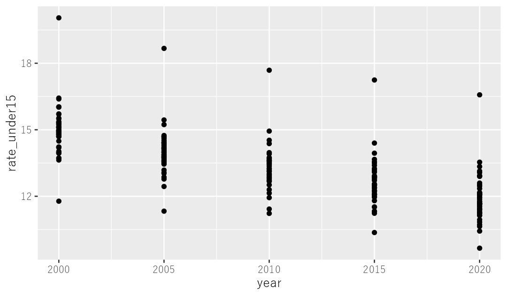
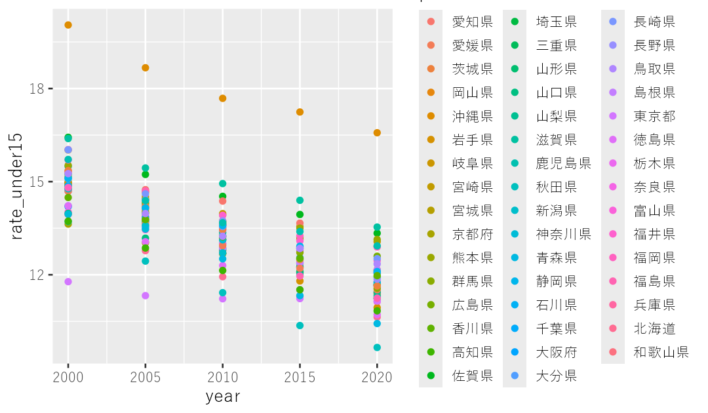
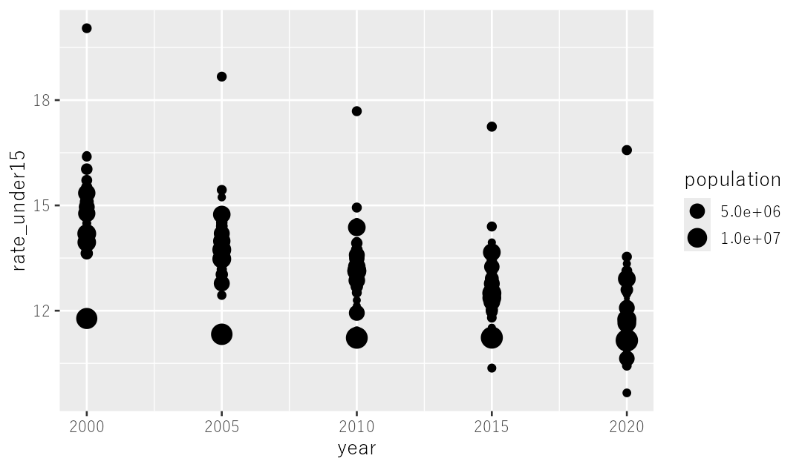
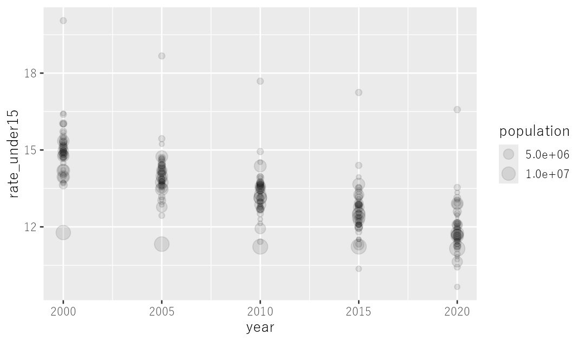
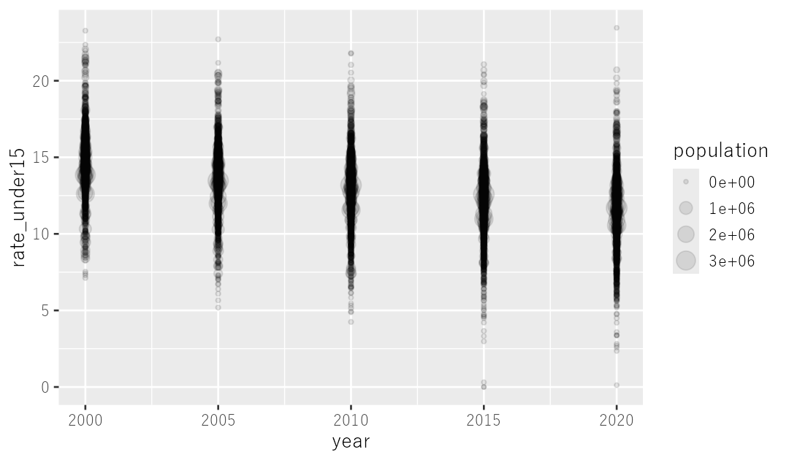
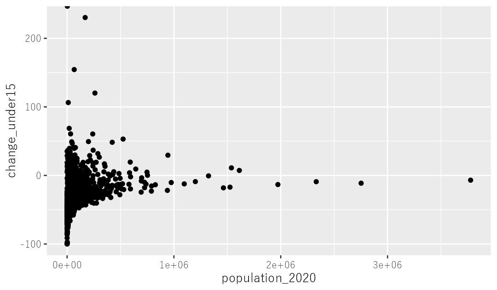
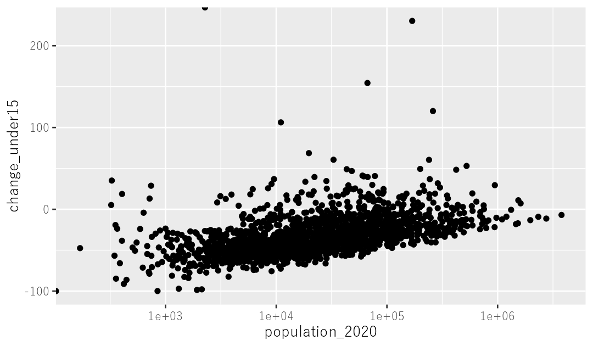
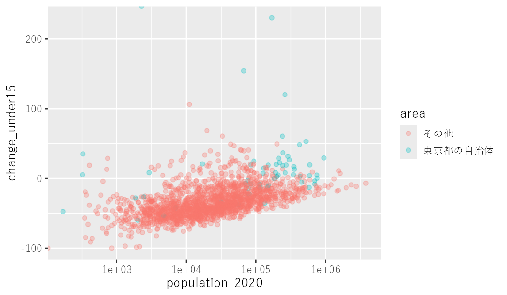
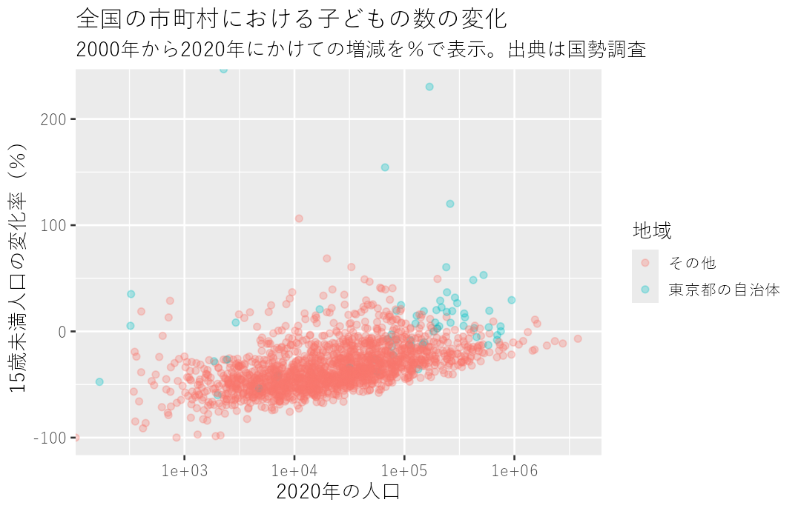

第2部 データを見る
散布図
データ量が多いときに、傾向をざっくりと知るのに役立つグラフ。1700余の市町村をいちどに眺めて、「東京だけ子どもが減っていない」の中身を確かめます。
点をばらまく
つぎに散布図です。これは点が平面上にばらばらと散らばったかたちのグラフで、点がたくさんあっても（というか、あればあるほどむしろ）分かりやすいというところが、折れ線グラフと棒グラフに比べて優れています。
というわけで、全都道府県の人口データを可視化していきます。まずはデータを読み込んで、all_pref というオブジェクトに保存しましょう。
all_pref <- read_csv("data/都道府県別人口.csv")このデータから各都道府県の子どもの割合を計算して、それを散布図で表現してみます。
all_pref %>%
mutate(rate_under15 = population_under15 * 100 / population) %>%
ggplot() +
geom_point(aes(x = year, y = rate_under15)) # ここで散布図を指定
geom_line や geom_col ではなく、geom_point と書くことで散布図を書くように命令しています。横軸に年、縦軸に子どもの割合を表示させると、全体として右肩下がりになっていることが読み取れるグラフになりました。
色、大きさ、透明度
ただ、点がすべて色も形も大きさも同じなので、見分けがつきません。試しに都道府県ごとに違う色をつけてみましょう。
all_pref %>%
mutate(rate_under15 = population_under15 * 100 / population) %>%
ggplot() +
geom_point(aes(x = year,
y = rate_under15,
color = prefecture)) # 色で分ける
うーん、色が全都道府県分で47種類もあるので、さすがに分かりにくくなってしまいました。
つぎに、人口によって点の大きさを変えてみましょう。
all_pref %>%
mutate(rate_under15 = population_under15 * 100 / population) %>%
ggplot() +
geom_point(aes(x = year,
y = rate_under15,
size = population)) # ここでサイズ指定
size = population と指定することで、人口によって点のサイズを変えるようにしました。このグラフをみると、2010年ごろまで子どもの割合が群を抜いて少なかったところがありますが、これは人口の多い都道府県なんだなということが読み取れますね。おそらく東京都でしょう。
ただ、点と点が重なり合ってしまっているところが、グチャグチャ〜ッとなっているのでちょっと分かりにくい。ここを解決するため、点を半透明にしてみましょう。
all_pref %>%
mutate(rate_under15 = population_under15 * 100 / population) %>%
ggplot() +
geom_point(aes(x = year,
y = rate_under15,
size = population),
alpha = 0.1) # ここで透明度を指定
点と点が重なり合っているところは色が濃くなっているので、どのあたりに点が集まっているのかがボンヤリ見えてきます。半透明にするように指定しているのは alpha = 0.1 という部分で、この数値を1に近づけるほどに色は濃くなり、0に近づけるほどに薄くなります。どれくらいの色合いにするかは、いろいろ試してベストなのを選べばよいと思います。
alpha が aes() の外に書かれていることにも注目してください。データによって透明度を変えたいわけではなく、全部の点を一律に薄くしたいので、外側です。
全市町村を眺める
散布図は点がたくさんあっても分かりやすい、というのを最初に書きましたが、せっかくなので都道府県別ではなく、全市町村のデータを表示してみましょうか。まずはデータを読み込んで、all_municipality というオブジェクトに保存します。
all_municipality <- read_csv("data/市町村別人口.csv")横軸に年、縦軸に子どもの比率をとったグラフにしてみましょう。先ほどと同じように、人口の多さを点の大きさで表現して、さらに半透明にします。
all_municipality %>%
mutate(rate_under15 = population_under15 * 100 / population) %>%
ggplot() +
geom_point(aes(x = year,
y = rate_under15,
size = population),
alpha = 0.1)
なんとなく、ですが、小さい丸は右肩下がりになっているのに対して、大きい丸はそうでもない。つまり規模の小さい自治体のほうが、大きい自治体よりも子どもの割合がはっきりと下がってきているように見えます。
「なんとなく」を確かめる
本当にそうでしょうか。確かめるため、2000年から2020年にかけて子どもの数がどう変化したか、自治体ごとに示したデータをつくっていきます。
以下のようなコードです。pivot_longer にしたと思ったら今度は pivot_wider にしたりしていて、やたら複雑に見えますが、そうしなければならない理由があります。もし興味があれば、パイプ演算子で区切られたところでデータがどんな形をしているか確かめることで、どんなふうに加工されていっているのかを確認してみてください。
all_municipality_change <- all_municipality %>%
filter(year %in% c(2020, 2000)) %>%
select(year, code, prefecture, municipality, population_under15, population) %>%
pivot_longer(cols = c(population_under15, population),
names_to = "category",
values_to = "value") %>%
pivot_wider(names_from = c(category, year),
values_from = value) %>%
mutate(change_under15 = (population_under15_2020 * 100 / population_under15_2000) - 100)横軸に2020年の人口、縦軸に子どもの数の変化率をとったグラフにしてみましょう。
all_municipality_change %>%
ggplot() +
geom_point(aes(x = population_2020, y = change_under15))
うーん、左の方にやたら点が集中していて、右の方には少ない。これは人口の少ない自治体はたくさんあるのに対して、人口が多い自治体は珍しいからです。このグラフでもまだ、何だかよく分かりませんね。
対数の目盛りにする
こういうパターンはよくあります。困ったときには「対数グラフ」にしてみると分かりやすくなることがあります。こんな感じです。
all_municipality_change %>%
ggplot() +
geom_point(aes(x = population_2020, y = change_under15)) +
scale_x_log10()
scale_x_log10() というのを最後に付け加えることで、横軸が対数表示に変わりました。対数というのは高校数学で習うはずですが、目盛りがひとつ変わるごとに数字が「倍々ゲーム」で増えるものです。たとえば、目盛りが一つ増えると10倍に、二つ増えると100倍に、三つ増えると1000倍になるというものです。
このグラフだと、子どもの数の変化率が人口規模に対して右肩上がりになっている、つまり人口の多い自治体ほど子どもの減り方が小さい傾向にあることがはっきりしました。
注目したいものだけ色をつける
また、先ほどつくってみたグラフの中で、東京都は子どもの割合が下げ止まっていそうだなぁ、ということが見えていました。その要素をこのグラフに盛り込んでみましょう。そのためにはまず、各自治体を「東京都の自治体」と「その他」に分類し、その分類にもとづいて色分けしてやればよさそうです。コードはこんな感じです。
all_municipality_change %>%
mutate(area = if_else(prefecture == "東京都",
"東京都の自治体",
"その他")) %>%
ggplot() +
geom_point(aes(x = population_2020, y = change_under15,
color = area),
alpha = .3) +
scale_x_log10()
点の重なり合いによって見にくくなるのを防ぐため、半透明にする指示も加えました。東京都の自治体は、規模が小さめでも子どもの減り方がかなり小さいことがみてとれますね。
見栄えを整える
さて、このグラフを同僚に共有して、記事化の可能性について相談したい。でもグラフにはタイトルがないし、縦軸の表示も change_under15 とか英語なのでちょっと分かりにくいし、全体的に少し不親切ですね。というわけで、見栄えにも気をつかってみましょう。こんなコードです。
all_municipality_change %>%
mutate(area = if_else(prefecture == "東京都",
"東京都の自治体",
"その他")) %>%
ggplot() +
geom_point(aes(x = population_2020, y = change_under15,
color = area),
alpha = .3) +
scale_x_log10() +
labs(title = "全国の市町村における子どもの数の変化",
subtitle = "2000年から2020年にかけての増減を％で表示。出典は国勢調査",
x = "2020年の人口",
y = "15歳未満人口の変化率（％）",
color = "地域")
labs() の丸括弧のなかでグラフのタイトルとサブタイトルを指定し、さらに縦軸と横軸、凡例のそれぞれが何を示しているのかを日本語で表示するように指示しています。このグラフなら同僚も一目で分かってくれる、はずです。
次の章では、この「見栄えを整える」をもう少しやったうえで、データを外に出す方法を扱います。